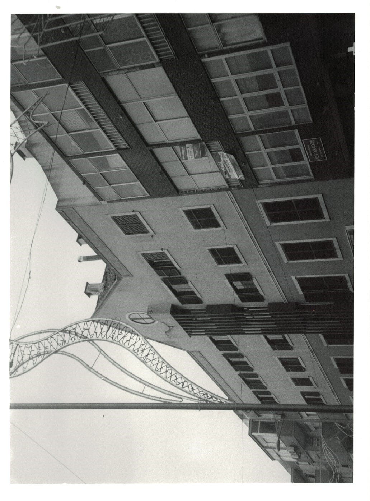
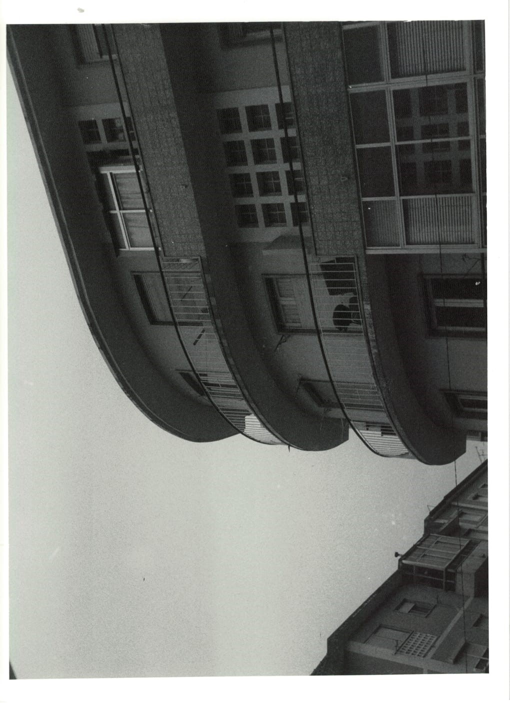

Este portefólio foi desenvolvido o longo dos anos com projetos e trabalhos realizados em âmbito escolar e alguns trabalhos autónomos. Sou a Nádia Fernandes, 21 anos, aluna de Artes e encontro me no último ano de licenciatura.
Paisagem Urbana, Fotografia Analogica
 Exposição coletiva , Bienal de Loures, 2020
Cadeiras e disciplinas que estudei.
| Capacidades e Aptidões | ||
|---|---|---|
| Principal | Secundária | Terceária |
| Artes visuais | Artes plásticas | Gravura |
| Pintura | ||
| Escultura | ||
| Desenho | Design | Gráfico | Comunicação | Produto | Multimédia | Vídeo | Fotografia |